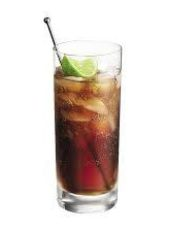

O Cuba Libre é um cocktail simples mas histórico que combina rum, cola e lima numa bebida refrescante.
Método de Preparo
GuarniçãoDecore com fatia de lima. |
 |
Como conta a história, no ano 1900, um capitão do Exército americano estacionado em Havana durante a Guerra Hispano-Americana despejou Coca-Cola e um apertar de lima no seu Bacardí e brindou aos seus camaradas cubanos gritando no bar: "Por Cuba Libre!" ("Por uma Cuba livre!"). E assim, uma lenda nasceu.